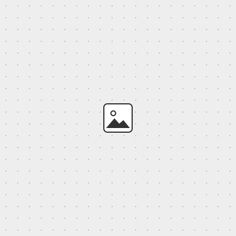

Soldering the QPad
To learn basic soldering and embedded programming, we used the QPad, a teaching board that our TA Quentin designed. In the training he showed us how to assemble it: a microcontroller (the Seeed XIAO RP2040 module), an OLED display and six capacitive touch pads.

The README of the QPad repository lists what the board needs.
To assemble this board, you need: OLED module, xiao rp2040, resistors: 2x 10k, or anything in the 2-10k range, circuit board, 3D printed support (optional), 3D printed jig (optional).
The iron was set to 350°C, and we took turns trying it at the bench. Under the microscope I could see that the solder wire is hollow, with flux inside the core, and I could watch Quentin's joints form up close.
After the training I tried soldering on my own for the first time, following Quentin's soldering guide. I struggled to melt the solder. It went everywhere, and I needed a flux pen to clean up the mess.
Quentin helped me fix it, and together we figured out that the thin conical tip I had started with made the solder much harder to melt. I switched to a larger tip and it worked much better.
Then I followed the rest of the assembly guide and finished the board. It is not beautiful, but hopefully I will improve as the course goes on.
Programming in the Arduino IDE
Next I tested Quentin's example code. Following the Boards Manager instructions, I added the package URL in the IDE settings and installed the Arduino-Pico core, then selected Seeed XIAO RP2040 as the board. Getting my laptop to see the board took a few steps. I held the BOOT button while plugging it in, the red and blue lights came on, the IDE showed an unknown UF2 board, and after pressing the R (reset) button the correct port appeared.
I went through Quentin's four sketches one by one: blink_RP2040, test_display_RP2040, test_serial_RP2040 and test_touch_RP2040.
The touch sketch prints one number per pad to the Serial Monitor. The number is how many times the loop runs before the pad charges up to HIGH, so it grows when a finger adds capacitance. The sketch counts a pad as touched when the number goes above 6. I tried it with my fingers and through a water bottle.
Learning electronics from zero
I had no electronics knowledge and had not touched physics for ten years, so every word in the lecture was new to me. Before going further I wanted to understand the basics. I first watched an introductory video. Then I gave the assignment and the class links to Claude and asked it to make a curriculum with quizzes for someone with no electronics background.
I followed two sets of notes. The first, Embedded Bench Notes, goes from electricity basics (voltage, current, resistance, components and schematics) to digital logic and what is inside a microcontroller, then how code reaches the board, and finally inputs, outputs and communication (buttons and touch, LEDs, PWM, the OLED, serial and I2C). The second walks through the QPad schematic step by step: counting the parts, the XIAO pins, power and ground, net labels, the R4 and R5 pull-ups on SDA and SCL, and why the touch pads have no parts at all.
Following the curriculum, I drew the diagrams myself, and the vocabulary finally started to make sense.
Reading the datasheet
The individual assignment asks us to browse the datasheet of our microcontroller. The RP2040 datasheet is over 600 pages, so I decided what I was looking for before opening it. I wanted to know which GPIO pins can be I2C SDA and SCL, what voltage counts as HIGH, the value of the internal pull-up used by the touch pads, the bits and pins of the ADC, and how much current one pin can supply.
The pin locations (section 1.4.1) show the 56 legs of the chip. The XIAO only brings 11 of the 30 GPIO out to its edge, which is why the QPad schematic names every pin twice, as in P6/D4: GPIO6 on the chip, D4 on the XIAO.
The GPIO function table (section 1.4.3) lists what each pin can become, F1 to F9. GPIO6 and GPIO7 can be I2C1 SDA and SCL, which is why the OLED is wired to D4 and D5. The touch pads only need plain HIGH and LOW (SIO), so they can go on any pin.
The IO electrical characteristics (section 5.5.3.4) answered the voltage questions. At 3.3V, any input above 2V is read as HIGH and anything below 0.8V as LOW. The input leakage current is at most 1 µA, which is why an input pin barely draws current and a pull-up resistor holds it at 3.3V.
Simulations
(WIP)
With the basic knowledge I have now, I want to simulate the circuits before building my own.
Idea: a map for poets
The QPad becomes a D-pad for walking a saijiki, the seasonal word almanac haiku poets use. The map is a grid of the 72 micro-seasons (七十二候) by the 7 traditional categories of season words, 504 cells in all. The OLED is a small window onto one cell, and the PC draws the path I walked as a circular mandala.
Step 1: a spatial understanding of words
On the internet we get lost. Everything is zoomed in, and we have very little sense of where one word sits in relation to others. I thought the QPad could be an interesting device for exploring a map of words.
One of my favorite things to do at a book cafe was to collect interesting books, then return them at the end of the day without looking up where they belonged. I had to explore the shelves myself to learn where each book lived, and each piece of knowledge became tied to a place. (Related ideas: topophilia, Bachelard's The Poetics of Space, and utamakura, the named places of classical Japanese poetry.)
Online there is no zoom-out, and no way to see where we are in relation to everything else. Keisuke Matsuoka describes the shift from exploring to searching:
人々は自己の身体を離脱して全体を相対的に把握するのではなく、常に自己の身体を基準にして現在地とその周辺だけをまなざすことに埋没するようになっているのではないか。
Rather than stepping outside their own bodies to grasp the whole in relative terms, people may have become absorbed in looking only at their current location and its surroundings, always with their own body as the reference point.
From 松岡慧祐『グーグルマップの社会学』 (The Sociology of Google Maps).
So on the QPad, the pads are the controller for moving around the space. The OLED shows the word, and the PC shows where you are. Four of the six pads are arrow keys. Left and right walk through time, one micro-season at a time from 立春 (start of spring) to 大寒 (greatest cold). Up and down change the angle, from weather to landscape, daily life, festivals, animals and plants. The other two pads zoom in and out.
Before touching the hardware I made a browser prototype with Claude that simulates the QPad, the OLED and the PC view together. It runs in any browser: open the prototype. The arrow keys walk, i zooms in, o zooms out and Space collects a word. All the source is in files/week03/kigo-pad.
The first hardware problem was making Chinese characters readable on a 128 × 64 OLED. The Adafruit GFX font has no kanji, so a Python script (make_font.py) renders only the characters the almanac actually uses into bitmaps: 209 kanji at 32 px in a Mincho typeface, and 104 kana at 16 px in a bold Gothic, because thin Mincho strokes disappear at small sizes. Together they take about 29 KB, which is small next to the 2 MB of flash on the XIAO. The test sketch kigo_min.ino decodes each UTF-8 string, looks up each glyph and draws it pixel by pixel, stepping through all 72 micro-seasons every 2.5 seconds.
Next is moving in four directions with the touch pads. The full firmware, kigo_pad.ino, is written but not yet tested on my board. I still need to check the pin of each pad against the schematic and swap in the touch routine from Quentin's test_touch.
Step 2: zooming out
The device has three zoom levels. The middle one shows a single word, large. Zooming in shows its meaning, reading and a haiku. Zooming out shows the place: a dot for where I am on the whole 72 × 7 map.
Step 3: seeing the path you walked
After exploring, the PC shows where you went on the word map as a circle, like GPS art. The year runs around the ring, and each category is one of the rings. The PC can also rearrange the same words into a "machine map", grouped by meaning instead of by the traditional categories, so you can compare how a person and a machine would lay out the same words.
For now this only runs in the browser prototype. Next I want the board to send its saved path to the PC over Web Serial, so the same art is drawn from a real walk.
Use of AI
I used Claude to build the two study pages and quizzes I learned from, and to answer my questions whenever a word did not make sense. The soldering, the testing and the drawings are my own. For the map for poets, I made the browser prototype, the font generation script and the firmware with Claude, starting from my own idea.